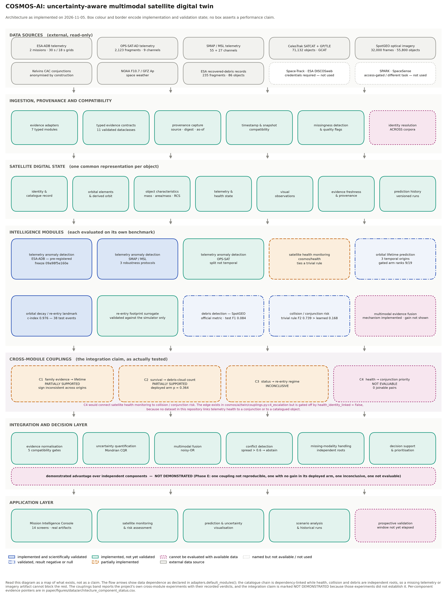

Physics, learning,
and an honest referee
Two layers share one codebase. The benchmark layer fits and scores predictors at historical origins. The runtime layer applies the validated configuration once, at a dated catalogue snapshot, and archives the result; the console only reads that archive.

paper/figures/architecture/,
generated from the implementation.From catalogue rows to an ordered cohort
| Stage | What happens | Result |
|---|---|---|
| Ingest | GCAT 1.8.8 catalogue, CelesTrak SATCAT and SW-All space weather, all dated local snapshots | 69,999 rows |
| Filter | Drop non-Earth or untyped objects, uncertain status codes, orbits without a day-precise epoch, perigee ≥ 2000 km, imprecise or impossible end dates | − 5,483 |
| Cohort | One row per object with a LEO-crossing canonical orbit and a known or censored outcome | 64,516 |
| Outcomes | 32,970 natural decays, 29,562 still in orbit, 1,984 controlled or other endings | — |
| Features | Orbit, age, design, trailing space weather, causal launch- and breakup-family statistics, physics summaries, class | 53 columns |
| Split | Train → tune-A / tune-B (by family hash) → test, strictly ordered in time; development outcomes censored at the origin | 4 folds × 3 origins |
The object's own radar cross-section is excluded by design: its availability depends on how long the object survived.
Orbit-averaged drag, with the unknowns sampled
King-Hele decay integration
Per-revolution change of semi-major axis and eccentricity for an exponential atmosphere about perigee, to third order in eccentricity; above e = 0.05 the exact orbit averages are evaluated by quadrature on 257 nodes. Integration stops at a 120 km perigee or a five-year cap.
NRLMSIS 2.1 densities
Density and scale height interpolated from a table of 185 altitudes × 13 F10.7 × 7 Ap values, averaged over latitude, local time and season. Solar and geomagnetic indices are held at their trailing 81-day means at the forecast epoch — the honest assumption, since the future is unknown.
Area-to-mass as a distribution
32 Monte Carlo draws per object from one of three sources, recorded per object: design dimensions where the catalogue has them, a class prior for intact objects without them, or the NASA standard breakup model for fragments. This provenance later turns out to predict where the intervals fail.
History-conditioned posterior
In the runtime twin only, an object still in orbit has survived since its canonical epoch, which selects low drag. Prior draws are propagated with the realised space weather and reweighted by survival and by agreement with the current orbit.
The models actually used
| Model | Family | Role in the framework |
|---|---|---|
| XGBoost | Gradient-boosted trees | Lifetime quantile regression; one model per quantile |
| LightGBM | Gradient-boosted trees | Lifetime quantile regression |
| CatBoost | Gradient-boosted trees | Lifetime quantile regression; multi-quantile objective |
| MLP | Neural network | Lifetime quantiles via a non-crossing head |
| TabM | Parameter-efficient deep ensemble | Lifetime quantiles, 32 ensemble members |
| TabICLv2 | Pretrained in-context tabular model | Lifetime quantiles, no hyperparameter search |
| Kumo-Tabular | Pretrained tabular model (vendor software) | Lifetime quantiles, 16,000-row context |
| XGBoost-AFT | Accelerated failure time | Survival-style comparison arm |
| U-Net / classical frontend | Convolutional segmentation | Optical debris streak detection (SpotGEO) |
| Isotonic regression | Calibration | Per-horizon re-entry probability calibration |
Each learner gets the same budget: 12 random configurations scored on tune-A, then a five-seed ensemble. The two pretrained in-context models get no search.
Combining the two, then admitting the result
Reliability-gated fusion
The fused quantiles are a convex combination of the physics and learned quantiles, with an object-dependent weight from a logistic gate over ten reliability descriptors — area-to-mass provenance, physics spread, eccentricity, perigee band, object class, probability of reaching the cap. Fitted on out-of-fold training predictions.
Mondrian conformal intervals
Split conformalised quantile regression, calibrated on tune-B within groups of object class × perigee band, with a hierarchical fallback when a group is too small. The coverage guarantee needs exchangeability, which a forward-in-time split does not provide — so coverage is reported as a measurement, never as a guarantee.

Nine modules, one archived run
The twin engine builds one record per object in orbit at the snapshot with perigee below 2000 km. Three regimes are distinguished and treated differently rather than averaged: 13,787 natural-decay objects receive the physics forecast with a history-conditioned area-to-mass posterior; 16,386 operator-controlled payloads get no drag forecast at all, because a station-keeping satellite does not decay on a drag schedule; 1,223 objects without a status form a separate unknown regime. Health, collision and debris are independent roots, so a missing telemetry artefact cannot block the catalogue chain.
Abstention is a first-class output. Where the saved per-horizon probabilities are not monotone across horizons — 123 objects, a known defect of calibrating each horizon independently — the adapter abstains and logs them instead of quietly taking a running maximum over a published number. The priority ordering is the 30-day re-entry probability times two for objects of 500 kg or more; it is an ordering with no probabilistic reading, and it never modifies a physical probability.